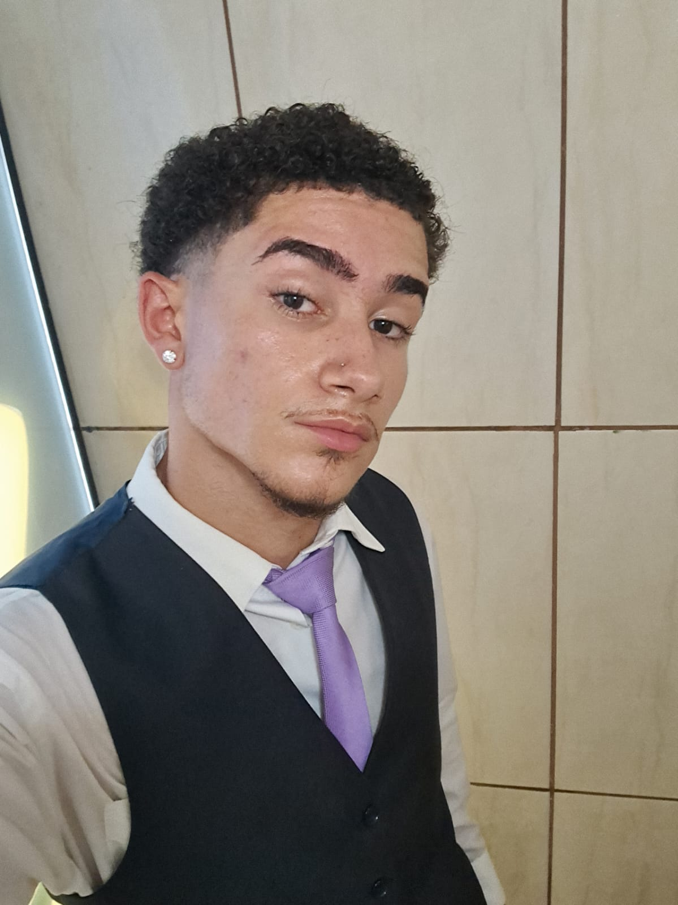
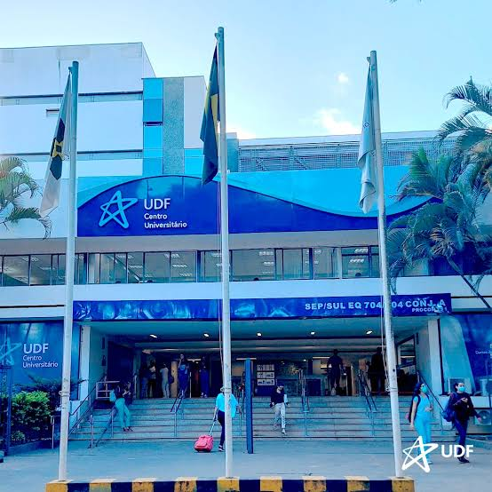

Infância
Minha infância foi marcada por muitas descobertas e aprendizados. Sou filho único de pais que sempre me apoiaram e me moldaram para eu ser a pessoa que sou hoje.
Olá, eu sou
Tenho 19 anos e estou cursando Engenharia de Software na UDF. Ainda não tenho projetos, mas a minha história e criações estão só começando.
"A formação não termina no diploma, ela se constrói a cada nova experiência compartilhada."Conhecer minha história

Minha infância foi marcada por muitas descobertas e aprendizados. Sou filho único de pais que sempre me apoiaram e me moldaram para eu ser a pessoa que sou hoje.
Comecei minha jornada escolar na escola particular e cresci nela, mas no ensino médio eu mudei para a pública e percebi que o ensino, a estrutura e os alunos são totalmente diferentes. Entretanto, eu me adaptei bem, conheci pessoas maravilhosas e agora estou na UDF, tentando realizar meu sonho.
Experiência de se formar, ir à algum show pela primeira vez, viajar pra caldas e entre outras experiências.
Enfrentei algumas dificuldades ao longo da minha vida, sempre fui uma pessoa mais tímida, entâo acabava tendo um pouco de dificuldade em me socializar, mas com o tempo consegui superar isso.

Ao entrar na faculdade, me senti um pouco perdido e ansioso só de pensar em tudo que estava por vim, percebi que é totalmente diferente da escola e que é cada um por si, mas aos poucos me adaptei e criei novas amizades.
Eu escolhi Engenharia de Software porque sempre tive interesse em tecnologia e pelo futuro promissor que eu posso ter nessa área.
Aprendi o básico de algumas linguagens de programação como Python, HTML, CSS, JavaScript e C, mas ainda preciso evoluir bem mais nessas linguagens e aprender outras diversas para ser um bom desenvolvedor no futuro.
Me formar, conseguir um bom notebook para estudos e para lazer e ter uma família amorosa e cuidadora.
Pretendo me tornar um desenvolvedor full-stack, contribuir para projetos inovadores e ter grandes oportunidades no mercado de trabalho.
Me casar, ter filhos, viajar ao redor do mundo e ter uma vida pacífica e feliz.
Brasília - DF, Brasil
andrevitorsouzapereira8@gmail.com
Telefone: (61) 99412-7528